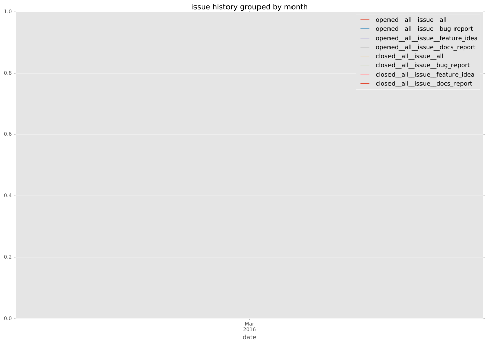

total issue counts
feature pull request: 1
pullrequest: 5
bugfix pull request: 3
feature idea: 1
issue: 1
new plugin: 1
issue history

days open by issue type
bugfix pull request
count: 6
std: 36.7042231903
min: 0
max: 82
median: 38.0
mean: 40.0
all
count: 10
std: 29.6528057507
min: 0
max: 82
median: 26.0
mean: 31.8
pullrequest
count: 0
std: nan
min: nan
max: nan
median: nan
mean: nan
feature pull request
count: 2
std: 0.0
min: 26
max: 26
median: 26.0
mean: 26.0
feature idea
count: 0
std: nan
min: nan
max: nan
median: nan
mean: nan
issue
count: 0
std: nan
min: nan
max: nan
median: nan
mean: nan
new plugin
count: 2
std: 0.0
min: 13
max: 13
median: 13.0
mean: 13.0
closures grouped by total days open